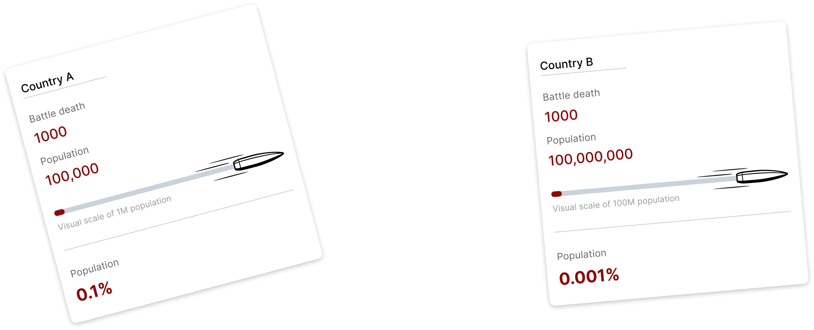
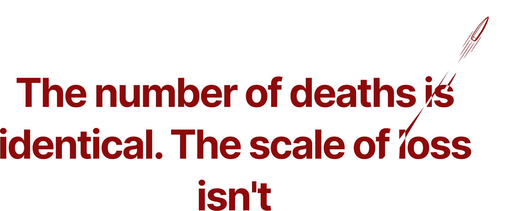
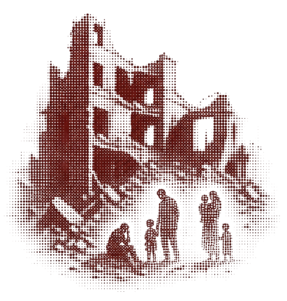

YEAR
1989
It can last for years.
And its cost is measured in lives.
How long conflicts last.
How many lives they take.
Imagine two countries recording the same number of battle deaths.
The number is identical.
But the population experiencing that loss may be completely different.


But one year is only one moment.

But living through conflict doesn't tell us how deadly it was.
Duration tells us how long a conflict lasted. It does not tell us how deadly it was.
The human cost of conflict
cannot be measured by time alone.